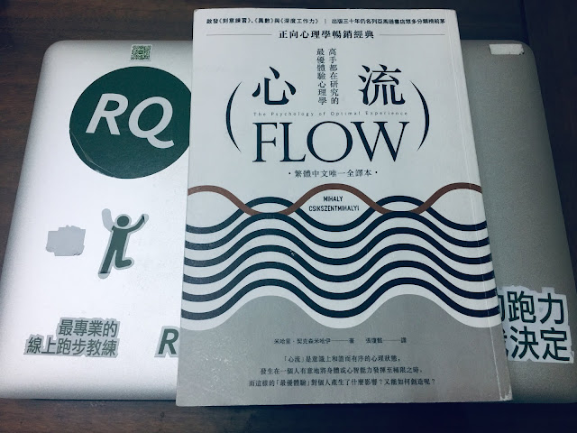

心流與庖丁解牛

因為最近幾年在研究「運動員的心志訓練」這個主題，買了很多相關的書來閱讀，若要替這些書排名，米哈里的這本《心流》對是我心目中的第一順位。該書所提出的「心流」(Flow)、「最優體驗」(Optiamal Experience) ea 「精神熵」（Psychic Entropy)這三個概念與其延伸的論點和範例，都直接把我心中的許多問題給解決了。全書理論完整、脈絡清晰、案例豐富，是該領域中寫得最好的一本書。
我手邊原本的用書原本是北京中信出版社於 2017 年 12 月出版，張定綺的譯本。今年四月拿到了繁體版，譯者和編輯都相當用心，一拿到書就愛不釋手，反覆重讀書中精彩的段落。複讀最多次的本書的第二章〈解析意識〉，不像其他談論意識的專書用了太多的術語，論述也太過艱深難懂，米哈里只用了不到三十頁的篇幅就把「自我」、「意識」、「意圖」與「注意力」這幾個概念之間的關係解說地非常清楚。
本書接著論述了〈樂趣與生活品質〉與心流之間的關係，以及成就〈心流的條件〉，接著分別談到〈身體的心流〉、〈思想的心流〉、〈工作中的心流〉以及〈獨處和與他人相處的樂趣〉。
心流的要素是：技巧、挑戰、明確的規則與目標、即時的回饋。「當一個人的技能與面對的挑戰相稱、目標方向清楚、整個行動體系有明確的規則可循、參與者可以隨時掌握自己的表現。在那當下，注意力會完全集中，讓當事人沒有餘力顧及任何不相干的事，或擔心任何問題。自我識會從中消失，對時間的概念也扭曲了。」(行路出版社，2019 年 4 月出版，頁 118）
喜歡運動的人讀起第五章〈身體的心流〉一定會心有戚戚焉，在這一章中探討如何善用身體來提高體驗品質，以及東方文化中藉由訓練身體來控制心靈的各種方式。其中這一段論點就很有意思：「提到如何掌控身體與感受身體，西方世界與偉大的東方文明相比，實在是小巫見大巫。從許多角度來看，印度與東方人掌控意識的成就，和西方人駕馭物質能量的成就，可以相提並論。這兩種方式各有利弊，過於強調任何一種者會帶來問題。印度人對於高層次的自我控制相當著迷，但是對於物質環境帶來的挑戰置之不理，結果人民飽受物質缺乏與人口過剩之苦，社會普遍存著一種無力感與冷漠感。相反的，過於主張物質能量的西方人則大肆揮霍資源，導致環境枯竭。完美的社會必須在精神與物質世界間取得平衡，我們不敢說要臻於完美，但是在意識控制這件事上，確實可以參考東方宗教的教導。」（新北市：行路出版社，2019 年 4 月出版，頁 162）
第七章〈工作的心流〉舉了許多有趣的例子，讓我更深刻地了解到看似無聊中的趣味是如何產生的。「有些工作看來很無聊、重複性很高、沒有意義，但有些人卻能把這些工作轉換成具有複雜性的活動：找到別人看不到的行動機會、專注在上頭，接著在互動中失去自我（忘我投入），最後，以更強大的自我呈現。在這樣的運作下，工作就會變得有樂趣，也因為投注了個人的精神能量，會覺得工作是自由的選擇，不再有逼不得已的感受。」（頁 226）
該章中提到了求學時的共同記憶—「庖丁解牛」這個故事尤讓我印象深刻。庖丁正是一位每天要負責肢解牛隻的廚師，看來是個苦差事，但名為「丁」的這位廚師卻從中感受到米哈里所謂的「最優體驗」。當他處理完複雜部位的肢解工作，直到整塊肉豁然一聲，像土石一樣落在地上。他握著刀，看著令人滿意的成果，久久不能自己 (原文：提刀而立，為之四顧，為之躊躇滿志)。
米哈里在書中不斷反覆陳述一個論點：「即使已經擁有一定的技術，『遊』(心流) 的出現還是有賴於出現新挑戰（如上述的「複雜」與「不好處理」），以及發展新技能。」（頁 226）
這對沉迷於研究跑步技術、游泳技術、自行車踩踏等技術以及喜歡理清概念邏輯的我而言讀這本書非常暢快。這不只是一本好書，更是一本可以留存後世的經典著作了。